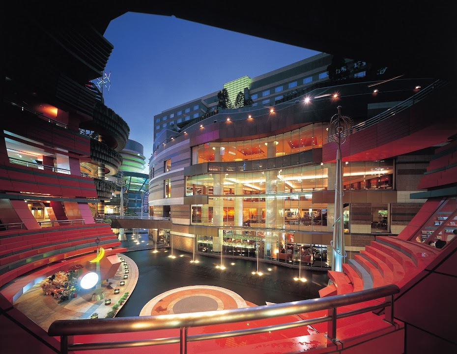

모든 카테고리가 후쿠오카 평균 수준 이하로
관리되고 있는 호텔이에요 👍

위치
1 Chome-2-82 Sumiyoshi, Hakata Ward, Fukuoka, 812-0018 일본 · 1박 약 22만원 (20만원 이상 가격대)
이 호텔에서 실망할 확률
10%
후쿠오카 평균(12%)보다 평균적인 수준이에요
최근 투숙객 100명 중 10명이 심각한 문제를 언급했어요
최근 투숙객 100명 중 10명이 심각한 문제를 언급했어요
우수
평균 12%
위험
최근 리뷰일수록 높은 가중치로 반영됩니다
분석 리뷰 303건 · 기준 2026년 3월
분석 리뷰 303건 · 기준 2026년 3월
카테고리별 위험도
후쿠오카 평균 = 50 · 3배 나쁘면 100
그랜드 하얏트 후쿠오카
후쿠오카 평균
리스크 상세 분석
대분류 6개 · 소분류 20개 전체 — 숫자는 위험도(0~100), 후쿠오카 평균이면 50이에요
🧼위생 경보
양호 · 위험도 21 · 후쿠오카 상위 11%
양호평균 50위험
-
침구/바닥 청결얼룩 · 머리카락 · 먼지0건5
-
청소 서비스청소 불량 · 쓰레기 방치37
-
해충/곰팡이벌레 · 빈대 · 곰팡이27
👂오감 지옥
양호 · 위험도 29 · 후쿠오카 상위 23%
양호평균 50위험
-
벽간/외부 소음옆방 소리 · 도로 소음11
-
악취 역류하수구 · 담배 · 곰팡내48
-
기기 소음에어컨 · 냉장고 소음0건5
🏚️시설 사기단
주의 · 위험도 53 · 후쿠오카 하위 32%
양호평균 50위험
-
공간/노후화비좁음 · 낡은 시설55
-
냉난방/수압냉난방 불량 · 수압 약함29
-
네트워크/TV와이파이 · TV 불량21
🗺️동선 파괴자
양호 · 위험도 42 · 후쿠오카 하위 50%
양호평균 50위험
-
역/거점 접근성역에서 멀다 · 찾기 어려움21
-
지형적 난관언덕 · 계단77
-
주변 편의성편의점 · 식당 없음38
-
허위 위치 정보위치 정보 불일치0건5
💬불친절 레이더
주의 · 위험도 52 · 후쿠오카 하위 39%
양호평균 50위험
-
응대 태도불친절 · 무시58
-
처리 지연체크인 지연 · 대기51
-
사후 대처보상 거부 · 무대응31
-
소통 불가언어 소통 문제0건5
🔒안전 그림자
주의 · 위험도 57 · 후쿠오카 하위 32%
양호평균 50위험
-
보안 시설도어락 · CCTV64
-
주변 치안밤길 · 우범지대23
-
사생활 보호방음 · 프라이버시64
위험 70+주의 45~70양호 ~45
불만 리뷰 5건 미만 소분류는 위험 등급을 붙이지 않아요 · 인용문은 리뷰 원문 발췌입니다
구글 별점 분포
최근 1년 2점 이하 리뷰 비율은 4% 입니다.
총 500건
- 1점3%
- 2점2%
- 3점6%
- 4점16%
- 5점74%
리뷰
심각도 · 최신순
이런 호텔은 어떠세요?
비슷한 가격대·가까운 위치에서 실망 확률이 낮은 순이에요
-
양호실망 확률 3%

The Gate Hotel Fukuoka by HULIC
THE GATE HOTEL 福岡 by HULIC구글 4.6 · 리뷰 204개1박 약 28만원 -
양호실망 확률 6%

호텔 일 팔라조
ホテル イル・パラッツォ구글 4.1 · 리뷰 992개1박 약 29만원 -
양호실망 확률 5%

아미스타드호텔 후쿠오카
アミスタホテル福岡 博多駅前구글 4.6 · 리뷰 173개1박 약 32만원 -
양호실망 확률 5%

JR 규슈 호텔 블라섬 하카타 주오
JR九州ホテル ブラッサム博多中央구글 4.4 · 리뷰 2,323개1박 약 35만원 -
양호실망 확률 6%

미쓰이 가든 호텔 후쿠오카 기온
三井ガーデンホテル福岡祇園구글 4.3 · 리뷰 2,000개1박 약 20만원 -
양호실망 확률 6%

코트 호텔 후쿠오카 텐진
コートホテル福岡天神구글 3.8 · 리뷰 726개 -
양호실망 확률 7%

니시테츠 호텔 크룸 하카타 기온
西鉄ホテル クルーム 博多祇園櫛田神社前구글 4.5 · 리뷰 786개1박 약 51만원 -
양호실망 확률 5%

몬탄 하카타 호스텔
モンタン博多 montan HAKATA구글 4.5 · 리뷰 1,285개